|
第五章：回家后的简单图片处理
第二节：照片的电脑后期处理（数码暗房）
3，Photoshop（PS）图片简单处理：
A，超快速的4步搞定PS（上图前）
a，旋转和裁剪
b，调整亮度，对比度，颜色（曲线与色阶）
c，图片改小并锐化
d，加边框并署名
下面分步讲解：
旋转和裁剪。首先在PS中打开原图（点击“文件”，在弹出的选项中点击“打开”文件）。如果地平线是斜的或人是歪的，第一步就是旋转图像把图正过来：点击“图像”，在弹出的选项中点击“Image
Rotation”，也就是旋转图像，再选择你要旋转的方向和角度即可。如果是竖拍的，那就转90度。
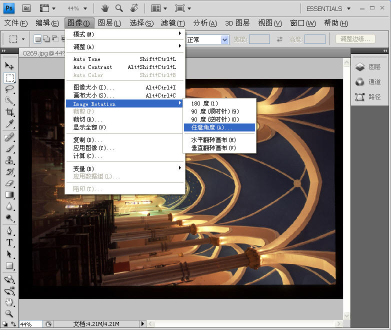
接下来是裁剪。这张照片是始建于1901年的长沙市北正街天主教堂。我用传统胶卷拍的，扫描后就数码化了，和数码照片没区别。点击左边竖排工具栏的第二个工具（虚线小方框），然后在图片上拉
虚线框，框大小和改变windows窗口大小一样做法。这里我要裁掉的是图片四周的黑框。裁多裁少个人自便。虚线确定后点击“图像”再点击“裁剪”即完成。
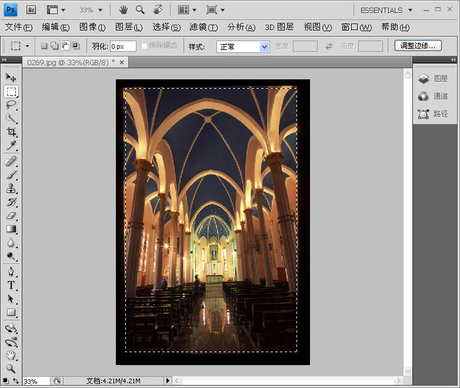
接下来请相信电脑自动一回，点击“图像”，此时我们看到有Auto Tone（自动色调）, Auto Contrast（自动对比度）,
Auto Color（自动颜色） 三个选择。先点击Auto Tone（自动色调），看看是不是你要的效果。如果是则继续点击Auto
Contrast和Auto Color；如果不是，那就点击图像左边的“编辑”键，再点击“还原”即可取消刚才做的自动色调。Auto
Contrast和Auto Color都照此操作。近一半的照片都可以这样自动调整，效果不错。
有时候自动操作效果可以但有些过头怎么办？比如Auto
Color加深了图片颜色，但加得太多，过于饱和了。能否消除一半？没问题，点击“编辑”，再点击“渐隐”，要百分之几十只需自己键入数字，看预览确定。
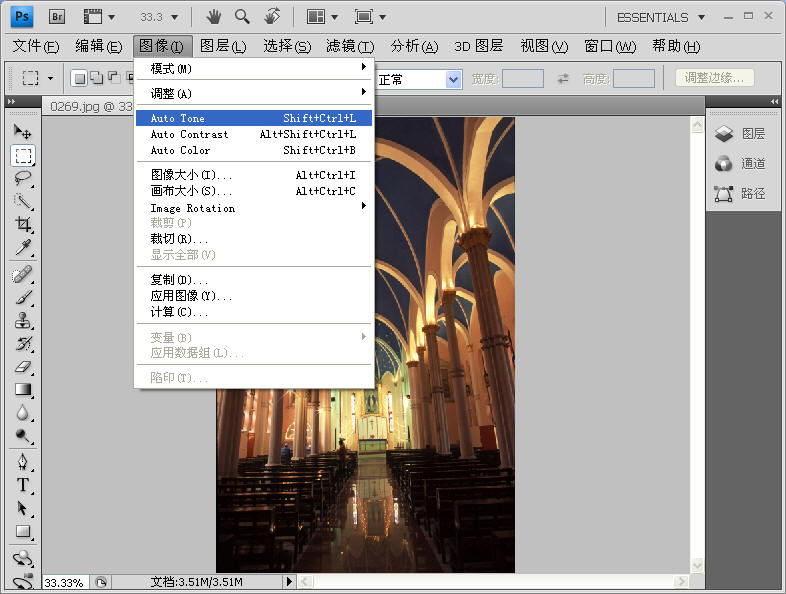
这张教堂图片我觉得自动调整效果不好，只好进行手动调整。要调的还是那三项：亮度，对比度，颜色。首先调整图片的亮度和对比度。列位看官，请看调整菜单的前四项：亮度/对比度，色阶，曲线，曝光度，它们都可以对图片的亮度和对比度进行调整。到底运用哪个？都可以，单用一项，或联和运用两三项都行。曝光度和亮度/对比度这两项我就不说了，因为实在太简单，点击进入它们各自的调整窗口，左右拖动滑钮直到你要的效果出现为止。下面重点说说色阶和曲线。
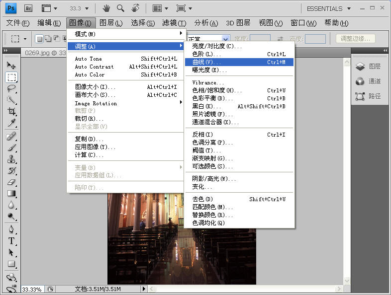
下图就是色阶主界面。它的调整也很简单，左右拉动5个滑钮，我们可以看到亮度和对比度都在发生变化，同时预览看效果，调到你满意为止。注意上面还有通道的选择，默认的是RGB，如果你下拉菜单选择红色，再拉动滑钮即可改变红色的强度，整个图片色调就会改变。这不变成调颜色了吗？没错，色阶是个多面手，既能调亮度对比度也可以调色彩。
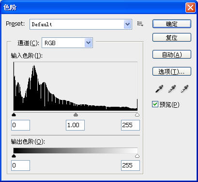
然而真正的超级多面手是曲线。它不但能调整体亮度和色彩，还能单独对一张图片的亮部和暗部进行独立的色彩和亮度处理。这有点类似音响的高音和低音旋钮。下左图是曲线调整的主界面。用鼠标把这根直线上下拖动就改变图片整体明暗。如果我们点击中间点，曲线的正中间就会被固定，然后可以把曲线的上段和下段反向分开拉动，可达到调节对比度的效果。曲线最多可以被分为16段进行细致调整，就象音响的频率均衡器一样。曲线和色阶一样也有通道的选择，默认的是RGB，如果你下拉菜单选择红色，再拉动滑钮即可单独改变红色的强度。我们看，就一个曲线工具，图片的亮度对比度色彩全搞定，此乃一个超级多面手。
|
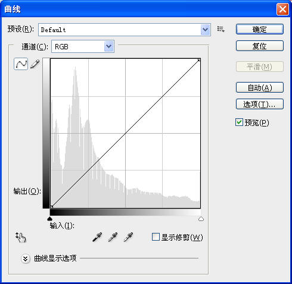 |
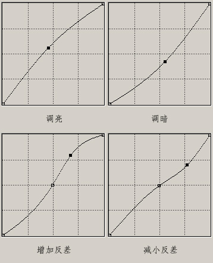 |
虽然曲线超级厉害，但在调整全图色调/色彩上还是色彩专用工具更好些。点击“图像”〉“调整”〉“色彩平衡”，即可进入调色菜单，左右拉动滑钮直到达成自己喜欢的颜色。色彩平衡可以调全图整体色彩，也可以对图片的高光、阴影部分单独进行调整。总之，调整颜色和调整亮度一样都有几个工具可单独或组合使用，简单总结：(1)
要修正总体的色调可使用色阶(Level)；(2)
要修正局部色调可使用曲线(Curve)；(3)
要改变总体颜色可使用色相/饱和度(Hue/Saturation)；(4)
要单独控制高亮、中间调和阴影部分的颜色，可使用色彩平衡(Color Balance)。
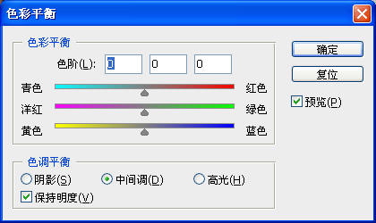
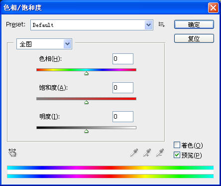
颜色搞定，下一步是把图片改小。很多网上论坛限制最大图片文件不能超过200K，所以图片的尺寸600x400就行。最长边建议不要超过800像素。操作是：点击“图像”〉“图像大小”，然后输入长700像素即可。
请注意，如果是供打印输出或送到冲印店出片子，千万不要把图片改小，图片文件越大越好。
接下来是锐化，就是让图片看起来清晰锐利。此时先要把图片放大到100%以便预览。锐化具体操作是：点击“滤镜”〉“锐化”，此时有5种锐化选择，一般建议直接点击“锐化”让电脑自动进行。锐化看起来很美但实际上有损图片细节，锐化过头的图片是很难看的，如果图片看起来和视频截图一样有锯齿感，那就是自动锐化过多了。减少一点的办法是：点击“编辑”〉“渐隐”，要百分之几十自己键入数字。一般建议50%。如果信不过电脑也可以选择USM手动锐化调整，好几个锐化参数可自己调整并预览，只要你不怕麻烦。锐化要有度，凡事皆有度，我们就离成佛不远了。
图片裸体上传是不好的，建议给它加个边框。有很多种边框，甚至还有专门的边框软件，搞成邮票效果花环效果什么的，这些框很俗气，不建议使用。比如在家里给朋友看你装裱好的作品，朋友看了半天说：恩，框子不错。这简直太失败了。我们看网上很多大师图片都只有最简单的单色细边框，连立体效果的边框都很少用，简单就是美。所以要向大师学习，只加单色边框，把观众的眼光引向图片本身而不是框子。操作是：点击“图像”〉“画布大小”，选好你要的边框颜色（画布扩展颜色选项），暗红色或其他暗色为佳，不建议用明亮色彩。假如图片是600X400，那就输入602X402，这已经是最细的边框了，只有2个像素。点击确定，边框就做好了。
对于上网交流，还可考虑在图片上签字署名，博客、个人网页、QQ空间网址等都可以写上去。操作是：在PS主窗口左边竖排工具栏点击“T”，然后在你想署名的图片位置上点击一下即可开始写字，字体的颜色和大小都是可调的。
最后一步是存盘，不要直接点击存储，这将覆盖宝贵的原文件。建议点击“文件”〉”另存为“/“存储为”，此时最好新开一个文件夹专门保管网上交流的图片。对于网上交流，JPEG压缩比选8就够了，如果打印或扩印输出则应选择10。
至此PS对图片的基本调整就结束了。请看下面调整前与调整后的图片效果对比。没有任何复杂操作，图层、蒙版之类的统统不涉及，PS就是这么简单。
|
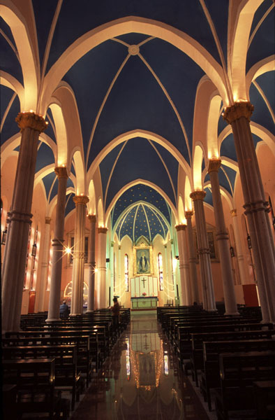 |
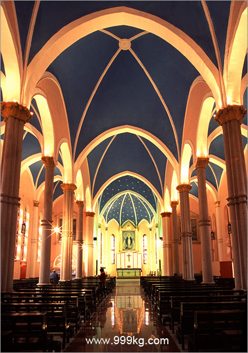 |
|